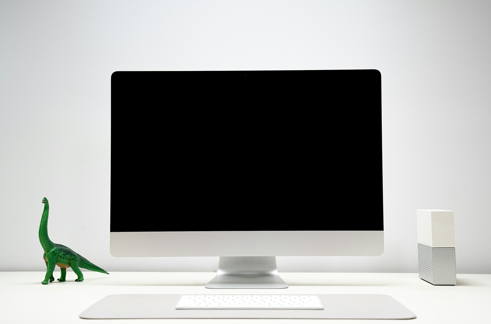
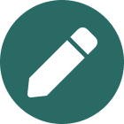
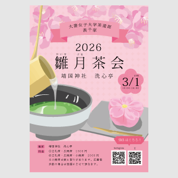
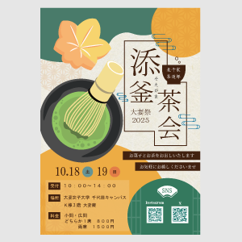
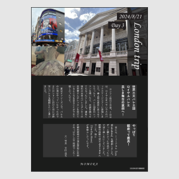
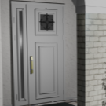
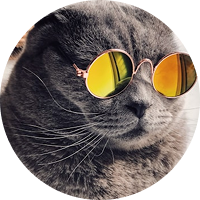

Otsuma
千代田区三番町のデザイナーです
Service
サービス

Graphic Design
ポスター、ロゴ、エディトリアル、広告ビジュアルなどを通して、 ブランドやコンセプトを視覚的に表現しています。 情報を整理しながら、タイポグラフィやレイアウト、配色設計によって 「伝わるデザイン」を意識しています。 単なる装飾ではなく、目的やターゲットに合わせて 最適なビジュアルコミュニケーションを設計しています。
Web Design
UI/UXを含めたWebデザインを行い、 見た目だけでなく使いやすさや導線設計まで考慮したサイト制作を行っています。 ブランドの世界観をWeb上で一貫して表現しながら、 情報設計・ユーザー体験・インタラクションを通して、 直感的で心地よいデザインを目指しています。 企画からデザイン、実装を意識した設計まで一貫して対応しています。
Direction
プロジェクト全体のコンセプト設計やクリエイティブディレクションを行っています。 課題や目的を整理し、 ブランドイメージやターゲットに合わせた方向性を設計しながら、 デザイン・コミュニケーション・体験を統一していくことを重視しています。 ビジュアルだけでなく、 リサーチや構成、制作フローまで含めて総合的にディレクションを行います。
Works
制作事例

雛月茶会2026ポスター
Illustrator

添窯茶会2025ポスター
Illustrator

日記
Illustrator

3DCGアニメーション
Blender

3DCG
Blender

新入生歓迎会スライド
PowerPoint
About
自己紹介

Momoka Yoshida
東京都千代田区を拠点に、Graphic Design / Web Design / Direction を中心に活動しています。 グラフィックとWebを横断しながら、 ブランドの世界観や体験を一貫して設計することを得意としています。 ビジュアルの美しさだけでなく、 情報設計やコンセプトメイク、ユーザー視点を大切にし、 目的に沿ったクリエイティブを提案しています。 ロゴ、エディトリアル、Webサイト、UI/UXデザインなど 幅広い領域に取り組み、 企画から制作まで柔軟に対応しています。 このポートフォリオでは、 完成したアウトプットだけでなく、 制作背景やプロセスも含めて掲載しています。